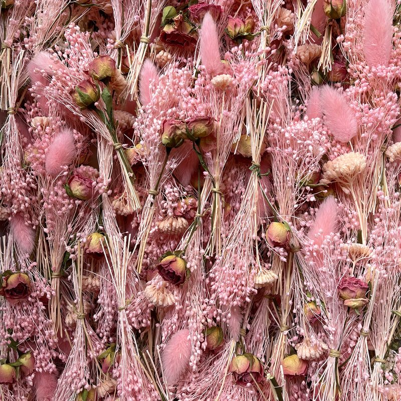
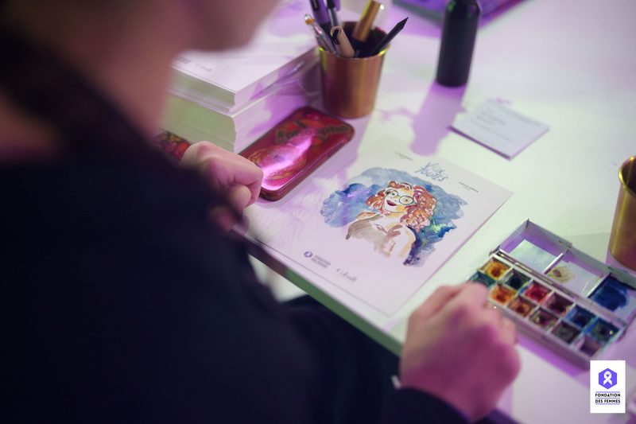

NOS ATELIERS SUR MESURERETAIL & ÉVÈNEMENTIEL
Tournés autour de l’art et de l’artisanat français nos Ateliers Sur-Mesure apportent poésie, élégance et sensibilité à chacun de vos projets.
Chaque expérience exclusive est pensée pour vous dans le respect de votre direction artistique et vos attentes.
Nous vous accompagnons de la conception jusqu’à la mise en place de l’animation
Nous portons une attention particulière à la technique, la gestuelle, le set-up pour vous offrir une expérience unique apportant le sentiment d’un privilège.
Une fois la conception finalisée, nous réalisons vos ateliers ou commandes avec nos artistes et artisans qualifiés en France et à l’international.
Pour vos marchés à l’international, nous vous créons des guidelines détaillées pour le déploiement de vos animations.







La vidéo est hébergée par YouTube : elle ne se charge qu’au clic.